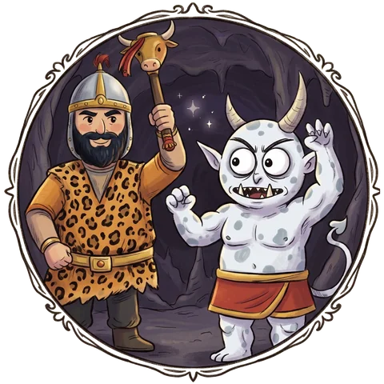
Literature
Picture-book stories from the Shahnameh, Ferdowsi's Book of Kings, told in order a chapter at a time: its heroes and kings, the magical Simorgh, the divs, and Rostam on his horse Rakhsh.
Short, game-like lessons teach you to read and write Persian, and to know the stories, history and traditions that come with it. Made for children growing up abroad, and for anyone joining an Iranian family.
Free to start. Runs in the browser on phones, tablets and computers.
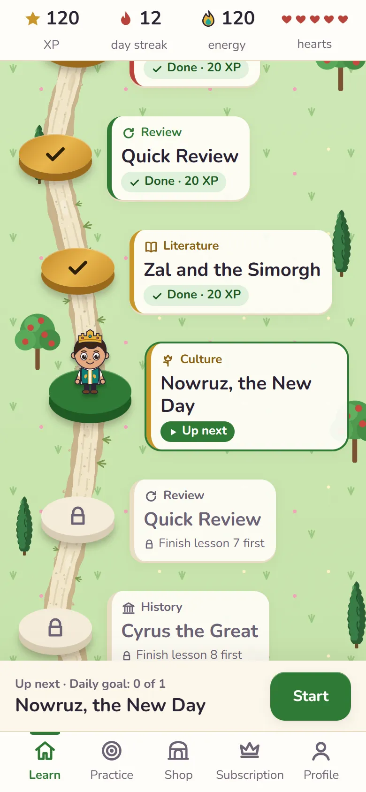
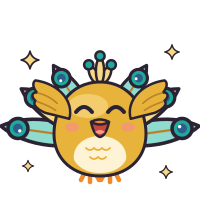
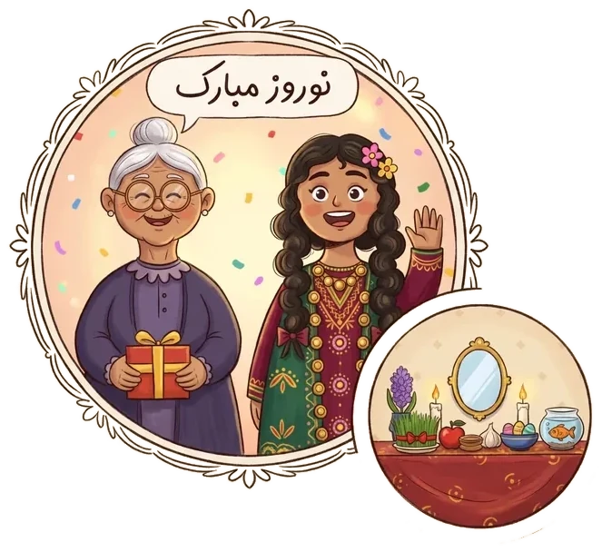
Many children of Iranian families hear Persian at home and understand it, but can't read or write it. The alphabet is new to them, and it runs right to left. They also miss out on the stories and traditions their parents grew up with, like Rostam and the Simorgh, Nowruz and Yalda Night.
If you married into an Iranian family, you celebrate holidays, share meals and hear stories you didn't grow up with. A phrasebook can teach you a few words, but not what the traditions mean, like why the Nowruz Haft-Seen table holds seven things whose names start with the letter س.
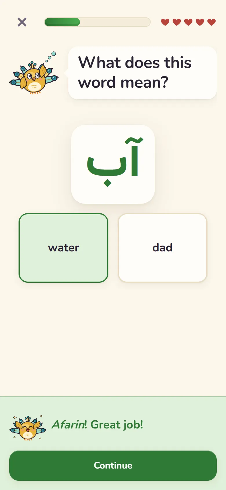
Planet Pooyah is a learning path you play a little of each day. Lessons mix quick questions with picture cards, stories and mini-games, and a friendly guide cheers you on.
You start with the alphabet, letter by letter: hear each letter, trace it with a finger, then build real words by dragging letters into place: آب (âb, water), بابا (bâbâ, dad).
Every new word comes with its sound, its spelling in English letters and its meaning, so anyone who doesn't speak Persian yet can start at Alef. If you already speak some, a short placement check skips what you know.
Language apps teach words and phrases. Planet Pooyah also teaches the literature, culture and history behind them, on the same path as the letters, so a language lesson might be followed by a story from the Book of Kings.

Picture-book stories from the Shahnameh, Ferdowsi's Book of Kings, told in order a chapter at a time: its heroes and kings, the magical Simorgh, the divs, and Rostam on his horse Rakhsh.
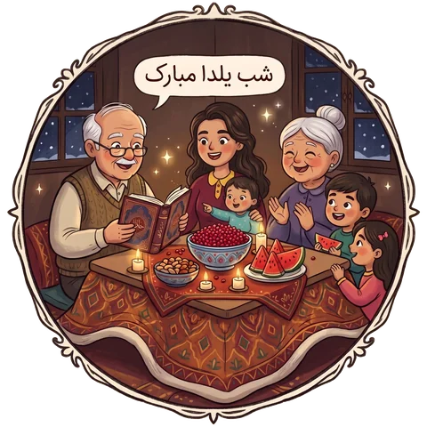
The traditions they celebrate at home, from Nowruz and Chaharshanbe Suri to Yalda Night, and the everyday culture around them: the food on the table, the poems people quote, and how families greet and look after each other.
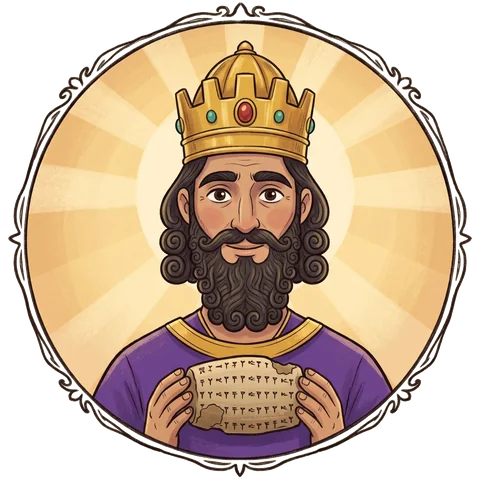
Iran's history told in order, starting with Cyrus the Great and the palace of Persepolis: the empires, the people who shaped them, and what the world took from Persia, like the word checkmate, from the Persian shâh mât.
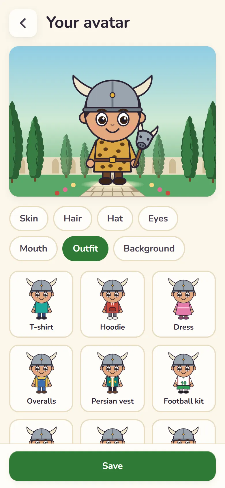
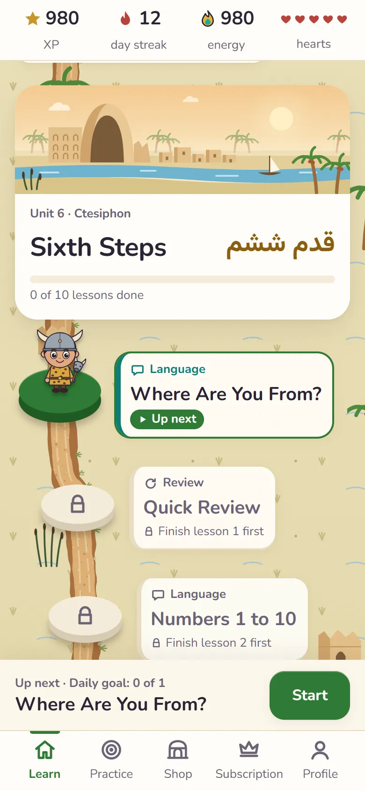
Every lesson earns XP and keeps a daily streak going. Learners design their own avatar, and finishing a unit can unlock something to wear: pass Rostam's Seven Trials and his helmet and outfit are yours.
Each unit opens a new place to explore, from the Simorgh's Mountain to the palace city of Ctesiphon. Quick reviews along the path bring back what they've learned, so the letters stick.
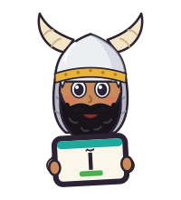
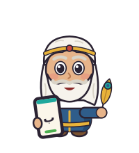
Planet Pooyah is on its way to iPhone, iPad and Android. Until then, it runs in the browser on any phone, tablet or computer.
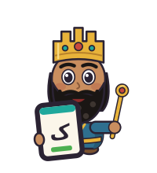
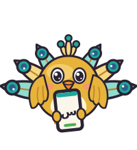